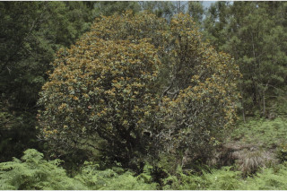
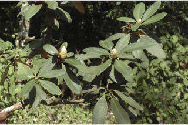
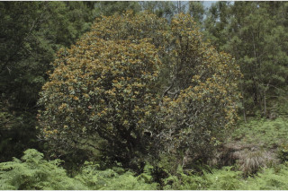
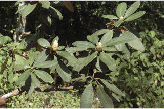
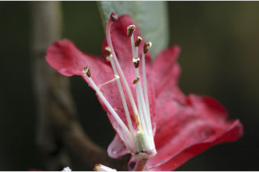
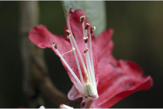

Trees up to 10 m tall.
10 ಮೀ. ಎತ್ತರದವರೆವಿಗೆ ಬೆಳೆಯುವ ಮರಗಳು
10 മീറ്റര്വരെ ഉയരമുളള മരങ്ങള്.
மரங்கள் 10 மீ. உயரம் வரை வளரக்கூடியது.
Bark brownish, fissured; blaze pinkish.
ಕಿರುಕೊಂಬೆಗಳು ಕಂದು ಬಣ್ಣದಲ್ಲಿದ್ದು ಸೀಳಿಕಾ ವಿನ್ಯಾಸದಲ್ಲಿರುತ್ತವೆ;ಕಚ್ಚು ಮಾಡಿದ ಜಾಗ ನಸುಗೆಂಪಾಗಿರುತ್ತದೆ.
വിണ്ടുകീറയ, തവിട്ടുനിറമുളള പുറംതൊലി; വെട്ട്പാടിന് പിങ്ക്നിറം.
மரத்தின் பட்டை ப்ரவுன் நிறமானது, பிளவுகளுடையது; உள்பட்டை இளஞ்சிவப்பு.
Branchlets terete, brown tomentose; apical buds covered by imbricate hairy ovate scales.
ಎಲೆಗಳು ಸರಳವಾಗಿದ್ದು,ಪರ್ಯಾಯ ಮತ್ತು ಸುತ್ತು ಜೋಡನಾ ಮಾದರಿಯಲ್ಲಿದ್ದು ಕುಡಿಕೊಂಬೆಗಳ ತುದಿಯಲ್ಲಿ ಗುಂಪಾಗಿರುತ್ತವೆ;ತೊಟ್ಟುಗಳು 2 ಸೆಂ.ಮೀ.ವರೆಗಿನ ಉದ್ದ ಉದ್ದಹೊಂದಿದ್ದು, ಕಾಲುವೆಗೆರೆ ಸಮೇತವಿದ್ದು ರೋಮರಹಿತವಾಗಿರುತ್ತವೆ;ಪತ್ರಗಳು 7.5 – 13 X 3.5 – 5.5 ಸೆಂ ಮೀ. ಗಾತ್ರ, ಅಂಡವೃತ್ತ- ಚತುರಸ್ರ ಮಾದರಿಯ ಆಕಾರ,ಸಣ್ಣ ಮೊನಚು ಮುಳ್ಳು ಹೊಂದಿದ ತುದಿ, ಚೂಪಾದ ಅಥವಾ ದುಂಡಾದ ಬುಡ,ಹಿಂಚಾಚಿದ ಅಂಚು,ತೊಗಲನ್ನೋಲುವ ಮೇಲ್ಮೈ ಹೊಂದಿರುತ್ತವೆ;ಪತ್ರದ ಮೇಲ್ಭಾಗ ರೋಮರಹಿತವಾಗಿರುತ್ತವೆ ,ಪತ್ರದ ತಳಭಾಗ ನಯವಾದ ತುಪ್ಪಳದಿಂದ ಕೂಡಿರುತ್ತದೆ; ನಾಳಗಳು ಮತ್ತು ಜಾಲಬಂಧ ನಾಳಗಳು ಪತ್ರದ ಮೇಲ್ಭಾಗದಲ್ಲಿ ಅಚ್ಚೊತ್ತಿದಂತಿರುತ್ತವೆ;ಮಧ್ಯ ನಾಳ ಪತ್ರದ ಮೇಲ್ಭಾಗದಲ್ಲಿ ಕಾಲುವೆಗೆರೆ ಸಮೇತವಿರುತ್ತದೆ; ಎರಡನೇ ದರ್ಜೆಯ ನಾಳಗಳು ಅಂದಾಜು 18 ಕವಲೊಡೆದ ಜೋಡಿಗಳಿರುತ್ತವೆ; ಮೂರನೇ ದರ್ಜೆಯ ನಾಳಗಳು ಮಸುಕಾಗಿ ಕಾಣುವಂತಹವು.
തവിട്ട് രോമാവൃതമായ ഉരുണ്ട ഉപശാഖകള്; രോമിലമായ, തമ്മില്ച്ചേര്ന്നു നില്ക്കുന്ന അണ്ഡാകാര ശലക്കങ്ങളാല് ആവരണംചെയ്യപ്പെട്ടുനില്ക്കുന്ന കക്ഷ്യമുകുളങ്ങള്.
சிறிய நுனிக்கிளைகள் குறுக்குவெட்டுத் தோற்றத்தில் வளையம் போன்றது, ப்ரவுன் நிறமான உரோமங்களுடையது; தண்டின் நுனியில் காணப்படும் மொட்டில் நெருக்கமாக அமைந்த செதிள்களுடையது; செதில்கள் முட்டை வடிவானது, உரோமங்களுடையது
Leaves simple, alternate, spiral, clustered at twig ends; petiole to 2 cm long, canaliculate, glabrous; lamina to 7.5-13 x 3.5-5.5 cm, elliptic-oblong, apex apiculate, base acute to rounded, margin reflexed, coriaceous, glabrous above, furfuraceous beneath; nerves and reticulations impressed above; midrib canaliculate above; secondary_nerves ca. 18 pairs; tertiary_nerves obscurely visible.
ಹೂಗಳು ತುದಿಯಲ್ಲಿರುವ ಗುಚ್ಛಗಳಲ್ಲಿ ಅಥವಾ ಹುಸಿ-ನೀಳಛತ್ರ ಮಾದರಿಯ ಪುಷ್ಪಮಂಜರಿಯಲ್ಲಿರುತ್ತವೆ; ಹೂಗಳು ಕಡುಗೆಂಪಾಗಿದ್ದು ಉಭಯಪಾರ್ಶ್ವ ಅಸಮಾಂಗತೆಯುಳ್ಳ ಮಾದರಿಯವುಗಳಾಗಿರುತ್ತವೆ.
ലഘുവായ ഇലകള്, എകാന്തരക്രമത്തില്, സര്പ്പിളമായി, തണ്ടിന്റെ അറ്റത്ത് കൂട്ടമായി ക്രമീകരിച്ചിരിക്കുന്ന വിധത്തിലാണ്; അരോമിലവും, ചാലോട് കൂടിയതുമായ ഇലഞെട്ടിന് 2 സെ.മീ വരെ നീളം; പത്രഫലകത്തിന് 7.5 സെ.മീ മുതല് 13 സെ.മീ വരെ നീളവും 3.5 സെ.മീ മുതല് 5.5 സെ.മീ വരെ വീതിയും ദീര്ഘ വൃത്താകാര-ആയതാകാരവുമാണ്, പത്രാഗ്രം മുനപ്പോടുകൂടിയതും, പത്രാധാരം നിശിതം തൊട്ട് വൃത്താകാരം വരെയുമാണ്, പിന്നാക്കം വളഞ്ഞിരിക്കുന്ന അരികുകള്, ചര്മ്മില പ്രകൃതം, മുകളില് അരോമിലമാണ്, കീെട്ട് തവിട്ട് പൊടി നിറഞ്ഞതാണ്, ഞരമ്പുകളും ജാലികകളും മുകളില് മുദ്രിതമാണ്; മുഖ്യസിര മുകളില് ചാലോട് കൂടിയതാണ്; ഏതാണ്ട് 18 ജോഡി ദ്വിതീയ ഞരമ്പുകള്; ത്രിതീയ ഞരമ്പുകള് അവ്യക്തമാണ്.
இலைகள் தனித்தவை, மாற்றுஅடுக்கமானவை, சுழல் போல் அமைந்தவை, சிறுகிளைகளின் நுனியில் இலைகள் கூட்டமாக மற்றும் நெருக்கமாக காணப்படும்; இலைகாம்பு 2 செ.மீ. வரை நீளமானது, குறுக்குவெட்டுத் தோற்றத்தில் கேனாலிகுலேட், உரோமங்களற்றது; இலை அலகு 7.5-13 X 3.5 செ.மீ., நீள்வட்ட-நீள்சதுர வடிவானது, அலகின் நுனி சிறிய நீட்சியுடையது (ஏபிக்குலேட்), அலகின் தளம் கூரியது முதல் வட்டமானது, அலகின் விளிம்பு பின்புறம் நோக்கி வளைந்தது, கோரியேசியஸ், அலகின் மேற்பரப்பு உரோமங்களற்றது, அலகின் கீழ்பரப்பு பெர்பெரேசியஸ்; அலகின் மேற்பரப்பில் நரம்புகளனைத்தும் பள்ளமாக அமைந்தது; மையநரம்பு மேற்புறத்தில் அலகின் பரப்பைவிட பள்ளமானது; இரண்டாம் நிலை நரம்புகள் 18 ஜோடிகளுடையது; மூன்றாம் நிலை நரம்புகள் மெல்லியதாக தென்படக்கூடியது.
Flowers in terminal fascicles or pseudocorymbs, crimson red, zygomorphic.
ಸಂಪುಟ ಫಲಗಳು ದಾರುವಿನಂತಿದ್ದು,ಚತುರಸ್ರಾಕಾರದಲ್ಲಿದ್ದು 2 ಸೆಂ.ಮೀ.ವರೆಗಿನ ಉದ್ದ ಹೊಂದಿರುತ್ತವೆ; ಸಂಪುಟ ಫಲಗಳು ಪಟಲಗಳ ಮೂಲಕ ಬಿರಿಯುತ್ತವೆ;ಬೀಜಗಳು ಅಂಡವೃತ್ತದ ಆಕಾರ ಹೊಂದಿರುತ್ತವೆ ಹಾಗೂ ಹೆಚ್ಚಿನ ಸಂಖ್ಯೆಯಲ್ಲಿದ್ದು ತೀರಾ ಸಣ್ಣದಾಗಿರುತ್ತವೆ ಮತ್ತು ರೆಕ್ಕೆ ಸಹಿತವಾಗಿರುತ್ತವೆ.
കടുംചുവപ്പുനിറത്തിലുളള, അസമമായ പൂക്കള്, ഉച്ഛസ്ഥ കൂട്ടങ്ങളായോ സ്യൂഡോകോറിംബുകളായോ ഉണ്ടാകുന്നു.
மலர்கள் தண்டின் நுனியில் காணப்படுபவை அல்லது கோரியம்ப் போன்று அமைந்தவை, கிரிம்சன் சிவப்பு நிறமானது, சைகோமார்பிக்.
Capsule woody, oblong, up to 2 cm long, septicidally dehiscing; seeds numerous, minute, ellipsoid, winged.
കായ, 2 സെ.മീ വരെ നീളമുളള, ഉറപ്പേറിയ ആയതാകാര, കോഷ്ഠുവിദാരക കാപ്സ്യൂള് ആണ്; ചിറകുളള, ധാരാളം ചെറിയ ദീര്ഘഗോളാകാര വിത്തുകള്.
வெடிகனி (கேப்சூல்), தடித்தது, நீள்சதுர வடிவானது, 2 செ.மீ. வரை நீளமானது, செப்டிசைடல் முறையில் வெடிக்காதவை; விதைகள் எண்ணிலடங்காதவை, நுண்ணியது, நீள்வட்ட வடிவானது, சிறகுடையது.

 




 
